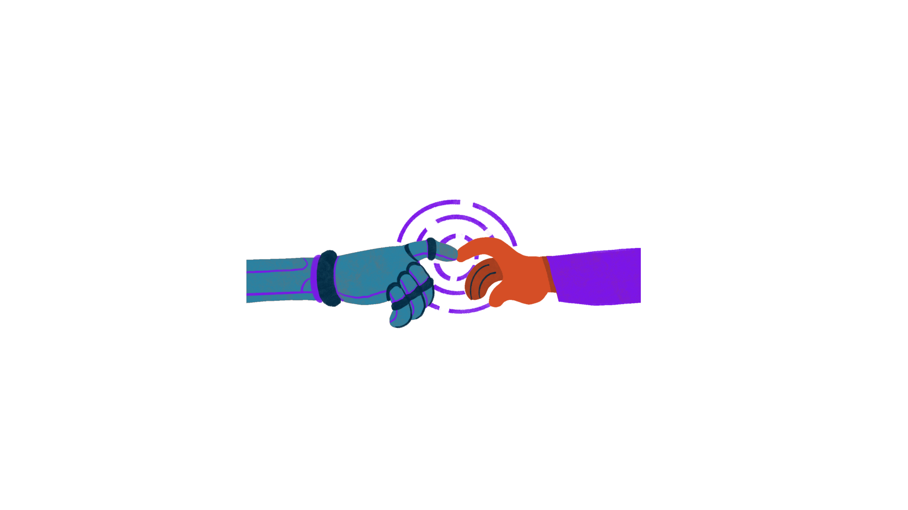
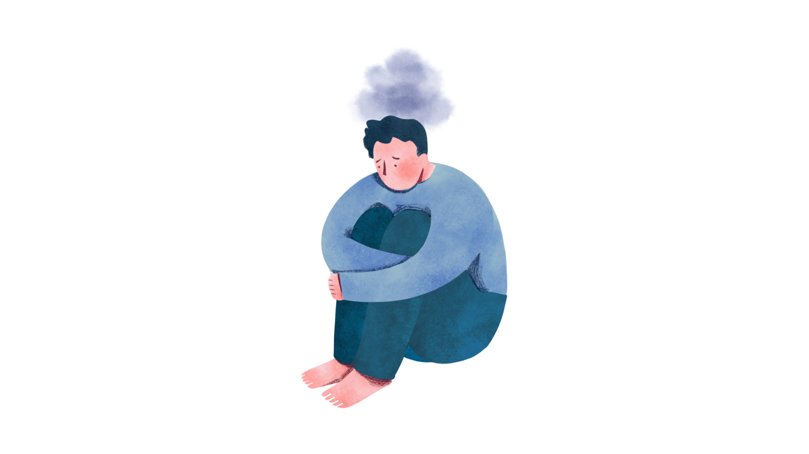
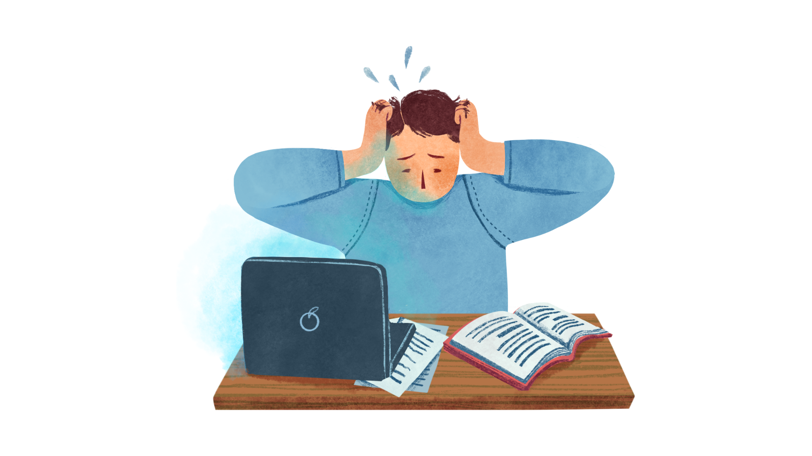

SAÚDE MENTAL
A saúde mental é um estado de bem-estar no qual o indivíduo consegue perceber suas próprias capacidades, lidar com as demandas normais da vida, trabalhar de forma produtiva e contribuir para a sua comunidade. Ela envolve o equilíbrio emocional, psicológico e social, que afeta diretamente a forma como pensamos, sentimos e agimos. A saúde mental não significa apenas a ausência de transtornos, mas a presença de recursos internos que permitem enfrentar desafios, manter relações saudáveis e tomar decisões adequadas.
A saúde mental está diretamente relacionada aos transtornos mentais, os quais podem impactar negativamente as relações interpessoais. O isolamento social, por exemplo, pode agravar sintomas psicológicos, enquanto o convívio com outras pessoas tende a favorecer o acolhimento, o fortalecimento de vínculos e o suporte emocional.
Portanto, cuidar da saúde mental é essencial para o desenvolvimento integral das pessoas e para o fortalecimento da qualidade de vida.
Impacto da Tecnologia e mundo digital na saúde mental
A tecnologia oferece ferramentas importantes para o acesso à informação, suporte psicológico e telemedicina, facilitando o cuidado em saúde mental. Porém, o uso excessivo de redes sociais, jogos eletrônicos e a exposição constante a notícias podem causar ansiedade, estresse e isolamento social.
É fundamental equilibrar o uso tecnológico para aproveitar seus benefícios sem prejudicar o equilíbrio emocional. No tratamento da saúde mental, os campos que receberam uma grande ajuda da tecnologia foram a psicologia e a psiquiatria, a digitalização tem um caminho muito grande a percorrer e já está entrando em consultas, pesquisas e tratamentos
Novas tecnologias na saúde mental
O avanço da tecnologia trouxe inovações como a inteligência artificial, aplicativos de monitoramento, realidade virtual e telemedicina para a saúde mental. Essas ferramentas ampliam o acesso ao atendimento, permitem intervenções personalizadas e facilitam o acompanhamento contínuo.
Entretando, desafios como privacidade, qualidade do serviço e exclusão digital precisam ser considerados para sua efetividade.

Saúde mental no ambiente escolar
A saúde mental no ambiente escolar é fundamental para o desenvolvimento integral dos estudantes, influenciando seu aprendizado, comportamento e relacionamento interpessoal. Um ambiente escolar que promove a saúde mental contribui para que os alunos se sintam acolhidos, seguros e motivados, favorecendo o desempenho acadêmico e o bem-estar emocional.
Professores e funcionários desempenham um papel importante na identificação precoce de sinais de sofrimento psicológico, como ansiedade, depressão e estresse, oferecendo suporte e encaminhamento adequado. No entanto, para isso, é necessário que as escolas contem com políticas públicas eficazes, que incluam profissionais especializados, formação docente e programas de promoção da saúde mental.
Além disso, a integração entre escola, família e comunidade é vital para construir uma rede de apoio que ajude a enfrentar os desafios emocionais dos estudantes. A promoção da saúde mental nas escolas também contribui para a prevenção do bullying, redução da evasão escolar e formação de cidadãos mais equilibrados e preparados para a vida.
Saúde mental no ambiente de trabalho
No trabalho, a saúde mental pode ser afetada por estresse, pressão por resultados e ambientes tóxicos, levando ao esgotamento emocional ou burnout. Promover um ambiente saudável envolve políticas que valorizem o bem-estar dos colaboradores, equilíbrio entre vida pessoal e profissional, apoio psicológico e comunicação aberta. Cuidar da saúde mental no trabalho aumenta a produtividade, reduz absenteísmo e melhora a satisfação dos funcionários.
Influência das desigualdades sociais e econômicas
As condições socioeconômicas impactam diretamente a saúde mental, pois a pobreza, a violência e a exclusão social aumentam o risco de transtornos mentais.
A desigualdade dificulta o acesso a serviços de saúde, educação e oportunidades de trabalho, criando ciclos de sofrimento psicológico. Combater essas desigualdades é fundamental para promover a equidade em saúde mental.